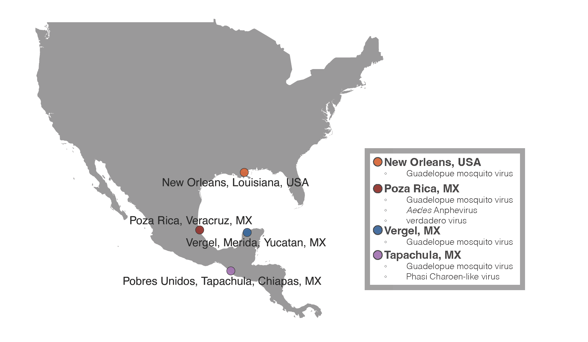
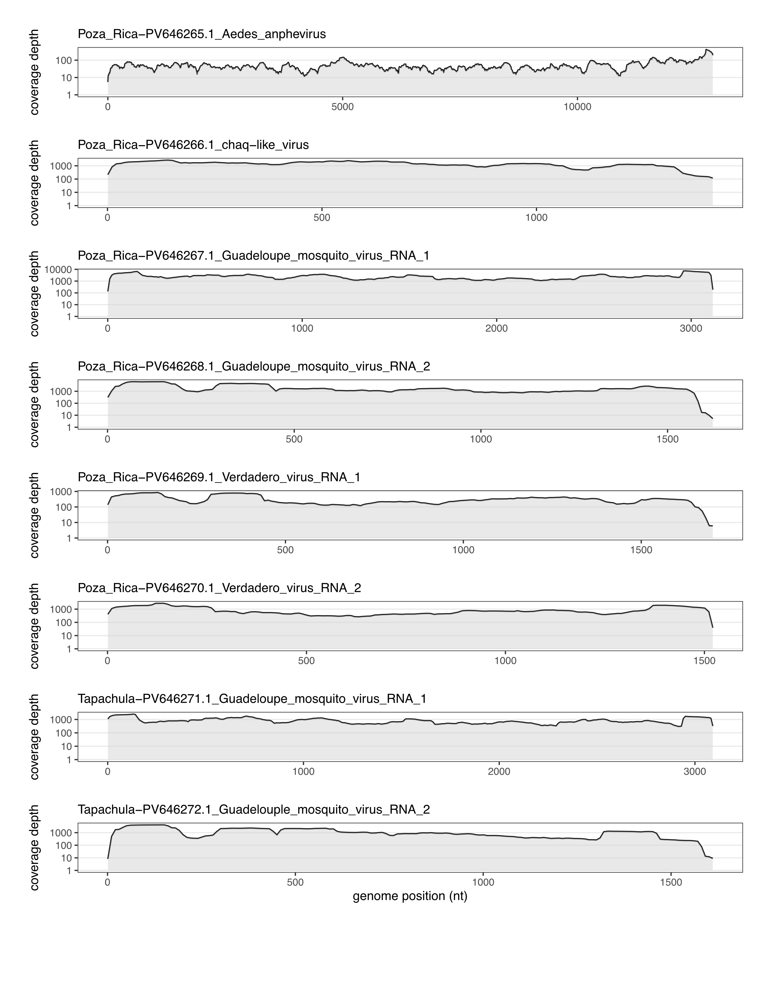
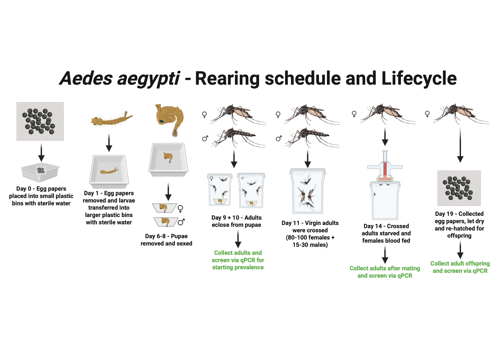
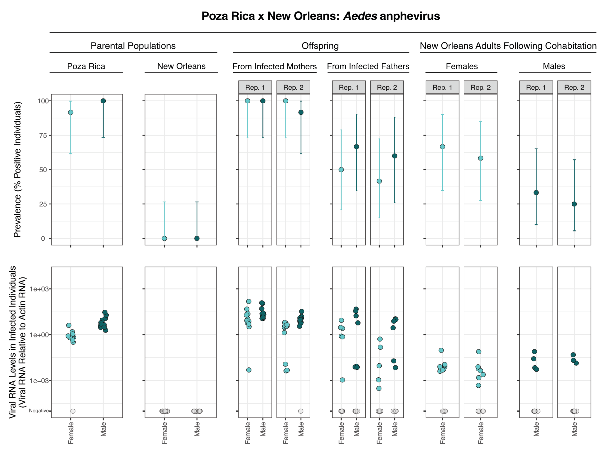
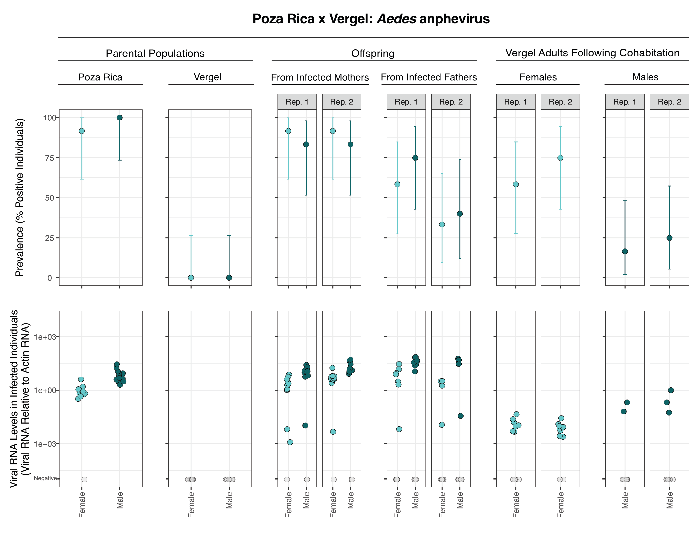
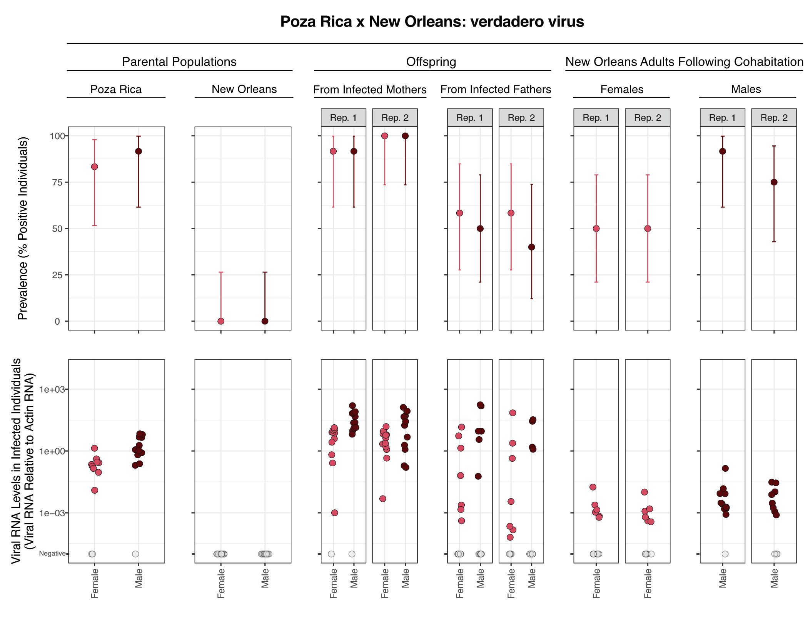
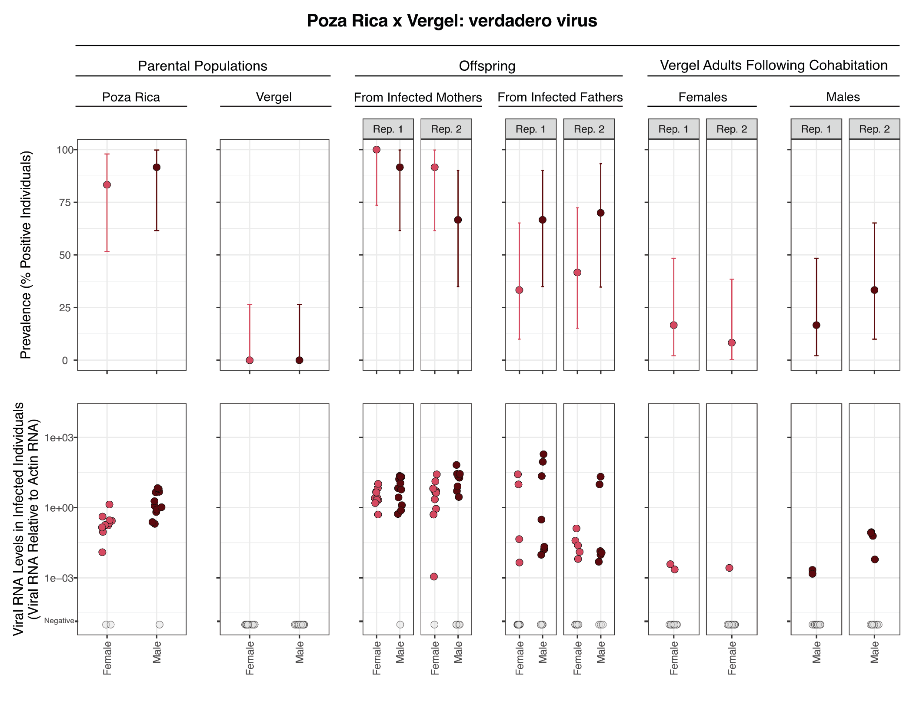
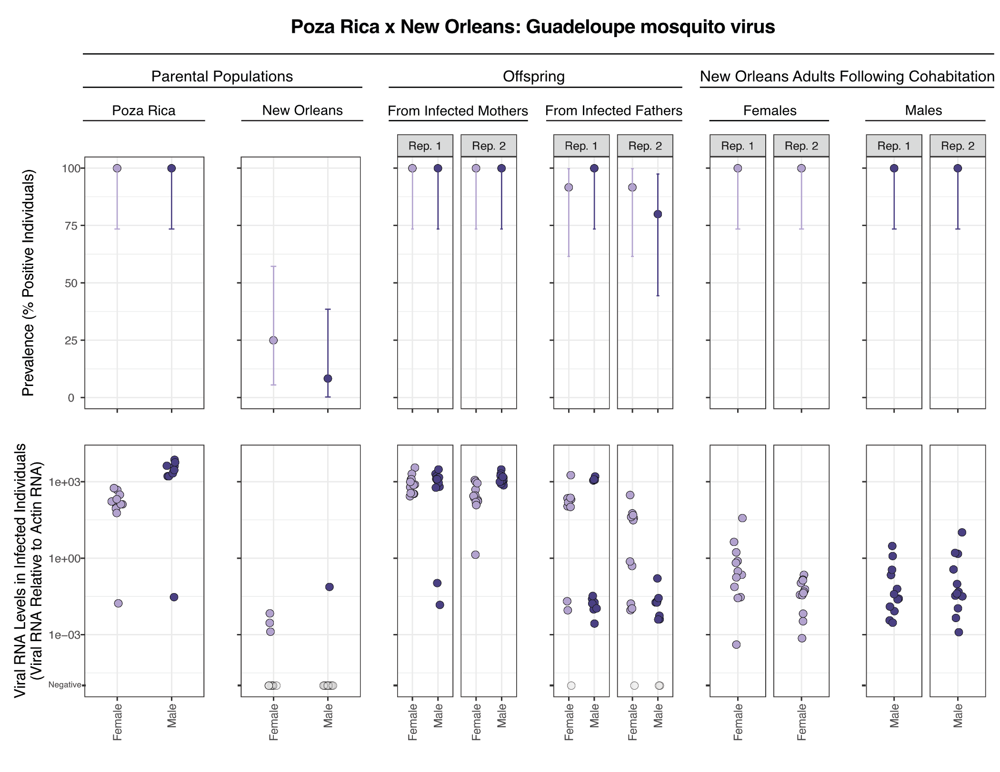
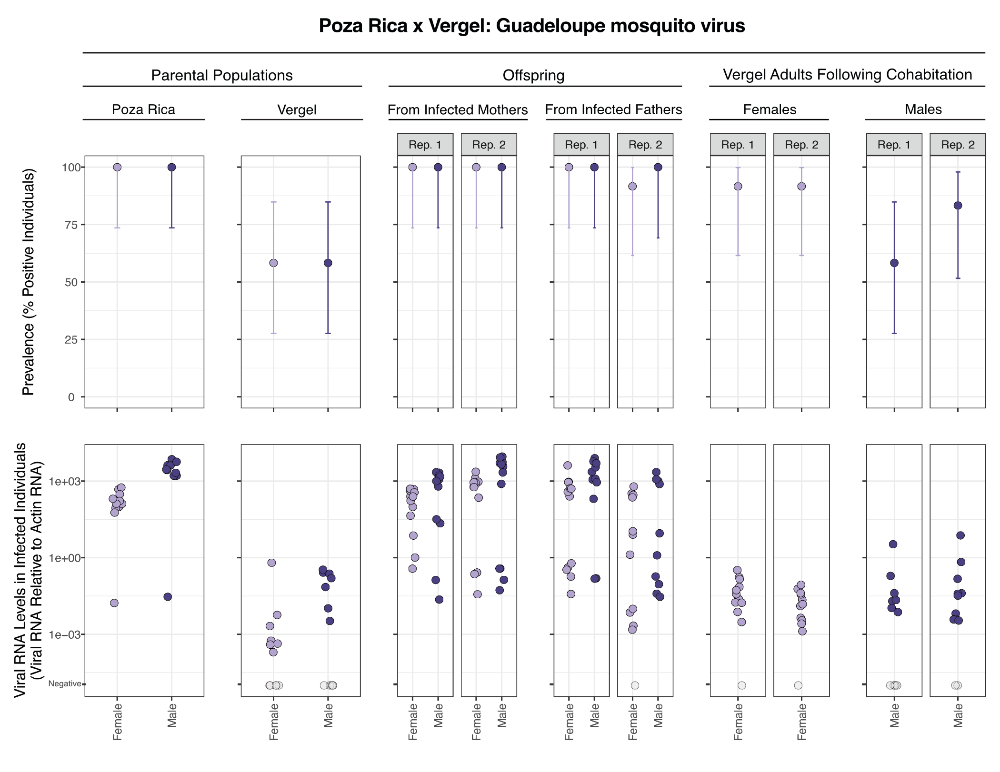
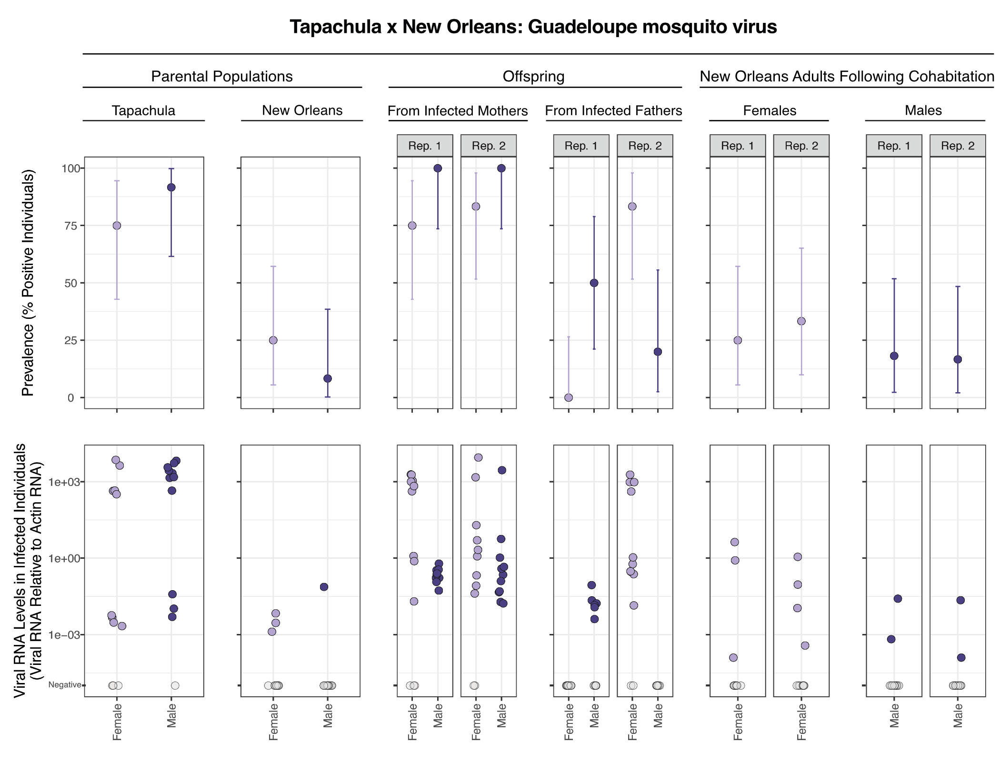

| Colony | Virus | Most similar Genbank sequence (a) | Identity to most similar sequence (%) | Genbank accession (b) | Average coverage depth (X) (c) |
|---|---|---|---|---|---|
| Poza Rica | Aedes anphevirus | MW435013 | 99.6 | PV646265 | 38x |
| Poza Rica | Verdadero virus RNA 1 & 2 | MT742174, MT742175 | 99.8-99.9 | PV646269-PV646270 | 356x |
| Poza Rica | Chaq-like virus | MT742176 | 100 | PV646266 | 910x |
| Poza Rica | Guadeloupe mosquito virus RNA 1 & 2 | MW434816, MW434807 | 99.3-99.6 | PV646267-PV646268 | 1202x |
| Tapachula | Guadeloupe mosquito virus RNA 1 & 2 | MW434816, MN053806 | 99.1-99.6 | PV646271-PV646272 | 589x |
Biparental vertical transmission of Aedes anphevirus, Guadeloupe mosquito virus, and verdadero virus in colonized Aedes aegypti
Tillie J. Dunham1, Karla Saavedra Rodriguez1, Christie E. Mayo1, and Mark D. Stenglein1*
Center for Vector-Borne Infectious Diseases, Department of Microbiology, Immunology, and Pathology, College of Veterinary Medicine and Biomedical Sciences, Colorado State University, Fort Collins, CO, USA
*: Correspondence: Mark.Stenglein@colostate.edu
- Center for Vector-Borne Infectious Diseases, Department of Microbiology, Immunology, and Pathology, College of Veterinary Medicine and Biomedical Sciences, Colorado State University, Fort Collins, CO, 80523, USA
Abstract
Aedes aegypti are a major vector of arboviruses, which infect these mosquitoes and can be transmitted to, and cause disease in, vertebrates. Ae. aegypti can also be infected by insect-specific viruses, which do not infect vertebrates, but may impact mosquito biology and vector competence. In this study we characterized the viromes of Ae. aegypti populations that had been maintained in laboratory colonies for 4 to 18 years. Mosquitoes were originally from Tapachula, Poza Rica and Merida, Mexico and New Orleans, USA. We used metagenomics to characterize the viruses present in the colonies, then quantified the vertical transmission efficiencies of the viruses by performing controlled crosses between populations. The viruses infecting these colonies included Aedes anphevirus, Guadeloupe mosquito virus, and verdadero virus. These viruses were at high prevalence in infected populations, with over 75% of individual adult mosquitoes infected. All three viruses exhibited biparental vertical transmission: both infected mothers and infected fathers transmitted infection to their offspring, but in all cases maternal transmission was more efficient than paternal. We also identified evidence of possible horizontal transmission between adult mosquitoes that had cohabitated during crosses. Efficient transgenerational transmission likely contributes to the ability of these viruses to persist in laboratory populations and nature. Because of their efficient vertical transmission and minimal apparent fitness costs, these viruses could be good candidates for gene delivery to mosquito populations, including for vector control.
Introduction
Aedes aegypti mosquitoes transmit important arbovirus pathogens including dengue, Zika, and chikungunya viruses (1). Although the global burden of arboviral disease is high, individual mosquitoes are only rarely infected by arboviruses (2). In contrast, mosquitoes are commonly infected by so-called insect-specific viruses (ISVs) (3–8). ISVs have no apparent ability to infect vertebrates and few well characterized fitness impacts on their mosquito hosts. A growing number of studies have characterized the virome of wild mosquitoes (9–19). Mosquito-infecting ISVs are diverse in terms of their prevalence and genetics, with representatives from all major groups of viruses.
ISVs are relevant to vector-borne diseases because they could naturally alter vector competence or could be used to deliver genes to mosquito populations (4, 5, 20–22). There is experimental and observational evidence that ISVs can interfere with arbovirus replication in cultured cells or reduce vector competence (23–31). Nevertheless, arboviruses remain a substantial public health problem despite the ubiquity of ISVs, and the impact of ISVs on vector competence is likely a function of complex environmental and genetic variables. It is possible that ISVs could be genetically engineered to block arbovirus replication beyond their natural ability to do so (20, 21). Alternatively, ISVs, especially common ones, could provide a means to study mosquito population structure and ecology (32).
The virome of lab-colonized mosquitoes is less diverse than that of their wild counterparts (15, 33–35). Certain ISVs tend to predominate in mosquito colonies (34, 35). These viruses presumably have properties that enable them to persist in laboratory populations, including efficient transmission and minimal fitness costs.
Here, we used metagenomic sequencing to characterize the virome of four colonies of Ae. aegypti maintained in our insectary. We performed experimental crosses to investigate transmission from infected mothers or fathers to offspring and evaluated evidence of possible horizontal transmission. Inclusion of distinct outbred populations in experiments enabled us to assess whether transmission efficiency might vary as a function of mosquito genotype.
Materials and Methods
Mosquito colonies: All colonies were maintained in the insectary of the Center for Vector-Borne Infectious Diseases at Colorado State University in Fort Collins, Colorado, USA. Poza Rica Ae. aegypti were originally collected from Poza Rica, Veracruz, Mexico in 2012 (36) (Supplemental Figure 1). Tapachula Ae. aegypti were originally collected from Tapachula, Chiapas, Mexico in 2018 (37). New Orleans Ae. aegypti were originally collected in New Orleans, Louisiana, USA in 2005 (38). Vergel Ae. aegypti were originally collected in Mérida, Yucatán, Mexico in 2011 (39). Experiments were performed in June 2022.
Mosquito rearing: At all life stages, mosquitoes were housed at 27˚C and 75-80% humidity. Eggs were hatched in 5x12 inch plastic bins with 800 mL of autoclaved room temperature deionized water (DI H2O). Growth containers were covered with organdy fabric secured by rubber bands. Egg papers were removed 24 hours after hatching and larvae were moved into 16x32 inch plastic containers with 2 inches of tap water. Aquatic stages were provided with 1/4 teaspoon of ground TetraMin fish food (Tetra). Larval crowding was checked daily, splitting the bin as necessary until pupation began, ~7 days after hatching. Pupae were picked with a sterile Pasteur pipette or mesh scoop and placed into a small cup with water to be sorted by sex. Female and male pupae were housed separately in 64 oz paper cartons until they reached adulthood. Adults were provided with raisins daily as a source of sugar.
Experimental crosses: Crosses were made by combining 80-100 virgin females with 15-30 virgin males. Adults derived from pupae that had been separated by sex. Mosquitoes were anesthetized at 4 °C for 5 minutes, counted and then placed into a new 64 oz paper carton with an organdy screen on top. Adults were provided with sterile water and raisins until blood feeding. Crosses were performed in duplicate and involved combinations of male and female adults from the different colonies.
Artificial blood feeding: Prior to blood feeding, mosquitoes were deprived of raisins for 24 hours and water for 3-6 hours. 4 day old female mosquitoes were provided 2 mL of warm defibrinated calf blood (Colorado Serum Company) via an artificial membrane feeding system. The artificial membrane feeding system (Lillie Glassblowers) has a glass blood feeder covered with hog’s gut and was kept at 37°C using a circulating water bath. Females were allowed to feed for 1 hour. After feeding, females were transferred to cartons for egg collection.
Egg collection: Egg collection containers were made with a small water cup lined with a thin strip of paper towel (egg paper) sitting in sterile DI H2O. Egg collection containers were taped to the bottom of cartons containing blood fed adults. 5 days after feeding, egg papers were allowed to dry completely at 27˚C and 75-80% humidity.
Total RNA Extraction: Individual adult mosquitoes were placed in wells of a 96-well deep-well plate (Costar, 3958) with 1 ball bearing (McMaster-Carr 1598K22) and 100 µL of lysis buffer containing 5M guanidine thiocyanate, 0.1M Tris(hydroxymethyl)aminomethane (Tris), pH7.5, 0.01M ethylenediaminetetraacetic acid (EDTA), and 20 mM dithiothreitol (DTT). Flies were homogenized in a Qiagen TissueLyzer instrument at 30 Hz for 3 minutes. After homogenization, samples were transferred to a 96-well deep well KingFisher Plate and mixed with 90 µL of washed Sera-Mag Speedbead magnetic beads (Cytiva, 65152105050250), 60 µL of 100% isopropanol, and 10 µL of lysis binding enhancer containing 200 µg/mL of proteinase K (P8107S, New England Biolabs), 20% glycerol, and 0.5% sodium dodecyl sulfate (SDS). RNA was purified using a KingFisher instrument with two wash steps. The first wash buffer contained 10 mM Tris, pH 7.5, 900 mM guanidine thiocyanate, and 20% ethanol. The second wash buffer consisted of 10 mM Tris, pH8, 1 mM EDTA, and 80% ethanol. RNA was eluted into 60 µL of water. Purified RNA was stored at -80˚C until further analysis.
Quantification of viral RNA levels: cDNA was synthesized by adding 5.5 µL of RNA, 1 µL of a 250 µM random 15mer oligonucleotide, 1 µL of 10 mM each deoxynucleotide triphosphates (dNTPs; NEB) and 5.5 µL of water. Reactions were incubated at 65˚C for 5 minutes then on ice for 1 minute. A mix containing 4 µL 5x first strand buffer (Invitrogen), 1 µL 0.1 M DTT, and 1 µL Superscript III reverse transcriptase (Invitrogen) was then added to each reaction. Reactions were incubated at 50˚C for 60 minutes then 80˚C for 10 minutes. Resulting cDNA was diluted with water to 100 µL total volume.
We used 2.5 µL of diluted cDNA as input to qPCR reactions containing 1x Luna qPCR Master Mix (NEB), 0.5 µM forward primer, 0.5 µM reverse primer (primer sequences in Supplemental Table 1), and water to a final volume of 10 µL. We performed qPCR on a QuantStudio3 instrument (ThermoFisher) using the following thermocycling conditions: 95°C for 3 minutes, 40 cycles of 95°C for 10 seconds, 60°C for 45 seconds, followed by a melting curve analysis. 12 females and 10-12 male mosquitoes were tested from each experimental group. 2 males from certain groups were replaced with a negative control (water) or a positive control (known infected mosquitoes from the Poza Rica colony). Legitimate target amplification was confirmed by inspection of melting curve peaks. Primers targeting the host actin-5C mRNA were used as an internal positive control Supplemental Table 1 (40). Levels of viral RNA were normalized to levels of actin-5C mRNA. Testing involved a total of 4472 qPCR reactions.
Modeling of transmission efficiency: We modeled transmission from parents to offspring using logistic regression and the lme4 R package (41). Models for vertical transmission took the form: infected ~ offspring_sex + non_infected_parent_colony (New Orleans vs Vergel) + infected_parent_sex (mother vs. father). Models for horizontal transmission took the form: infected ~ exposed_parent_sex + exposed_parent_colony (New Orleans vs. Vergel). Models for Guadeloupe mosquito virus tranmission also included a infected_parent_colony (Poza Rica vs Tapachula) term. Infected was a binary variable indicating whether individual mosquitoes were qRT-PCR positive. Fixed effects included the sex of tested offspring or cohabitating adult parent, the infected and non-infected parental colonies, and, for vertical transmission, the infected parent sex: infected mothers (maternal transmission), of infected fathers (paternal transmission). Models that included replicate as a random effect were not significantly better fitting as determined by ANOVA, so models shown include fixed effects only. An exception was horizontal transmission of Guadeloupe mosquito virus: a model that included replicate as a random effect fit significantly better. Models that included interaction terms were not significantly better fitting so models do not include interaction terms. Code for modeling is provided in the linked github repository.
Metagenomic sequencing: Total RNA from 12 male and 12 female adults from each colony were pooled and used as input for library preparation. Libraries were constructed using the Kapa Biosystems RNA Hyper Prep kit following the manufacturer’s protocol (Roche). Library size distribution was assessed using an Agilent tapestation instrument. Libraries were sequenced on a NovaSeq X Plus instrument using paired-end 2x150 sequencing (Azenta Life Sciences). We included a negative control library prepared from water and a positive control library prepared from HeLa cell total RNA.
Virus sequences were recovered from metagenomic datasets as previously described (42). Briefly, low quality and adapter-derived bases were trimmed from reads using Cutadapt v3.5 (43). Host-derived reads were removed by mapping trimmed reads to the Ae. aegypti genome and transcriptome AaegL5.0 assembly (GCF_002204515.2) using bowtie2 v2.4.5 (44, 45). Remaining reads were assembled using the SPAdes assembler v3.15.4 (46). Virus-derived contigs were identified using BLASTN and BLASTX to search the NCBI nucleotide and protein databases (47). Virus sequences were validated by remapping unassembled reads to draft sequences using bowtie2 and annotated using Geneious software v2025.0.3 (https://www.geneious.com). Code is available at: https://github.com/stenglein-lab/taxonomy_pipeline and https://github.com/stenglein-lab/remapping_workflow.
Endogenous Viral Element (EVE) testing: To rule out the presence of a GMV-like endogenous viral element within the host genome, we performed a qPCR as previously described on purified nucleic acid, which included RNA and DNA, without prior reverse transcription.
Data Availability: Data and code for all analyses are available at https://github.com/tdunham19/CM3_Mosquito_Paper. Assembled virus sequences are available in the NCBI nucleotide database under accessions PV646265-PV646272. Metagenomic datasets are available from the NCBI SRA database under bioproject PRJNA1260027. This paper is implemented as a reproducible quarto markdown document (48).

Results
Metagenomic identification of viruses infecting mosquito colonies
We used shotgun metagenomic sequencing to characterize the viruses infecting Ae. aegypti in four colonies maintained in our insectary. We prepared libraries from total RNA from mixed-sex pools of parental mosquitoes from experimental crosses. Libraries were sequenced on an Illumina NovaSeq X instrument to generate an average of 6.3×106 read pairs per dataset. Following quality and adapter trimming and removal of host-mapping reads, an average of 4.1×105 read pairs per dataset remained (6%). Remaining reads were assembled and contigs were used as BLAST queries to the NCBI nucleotide and protein databases to identify virus contigs.
This analysis yielded 8 contigs longer than 1000 nt corresponding to sequences from 4 viruses all known to infect Ae. aegypti: Guadeloupe mosquito virus (GMV) (16), verdadero virus (42), chaq-like virus, which is likely a satellite of verdadero virus (42), and Aedes Anphevirus (AeAV) (33) (Table 1). The Poza Rica colony produced high coverage coding complete sequences for AeAV, GMV, veradero virus, and chaq-like virus. These sequences were all >99% identical to existing sequences (Table 1; Supplemental Figure 2). The Tapachula dataset yielded a coding complete GMV sequence. Neither the New Orleans nor the Vergel colonies produced any candidate viral contigs longer than 1000 nt. Datasets contained shorter contigs with similarity to virus sequences that likely originated from the endogenized viral sequences that are common in Aedes genomes (49, 50). No reads in the New Orleans or Vergel datasets mapped to the virus sequences detected in the Poza Rica or Tapachula colonies.
- The most similar existing sequence in the NCBI nucleotide database, determined using a BLASTN search.
- Accessions of newly deposited sequences from this study.
- The average depth of coverage in metagenomic datasets.

To determine the efficiency with which these viruses were transmitted from adults to offspring, we set up a series of crosses involving mosquitoes from the different colonies (Supplemental Figure 1, Supplemental Figure 3). We used RT-qPCR to quantify the fraction of individuals infected (prevalence) and viral RNA levels in individual mosquitoes. Sampling of adults at the time of crossing allowed us to measure prevalences and RNA levels in parental populations. Sampling of adults after cohabitation and mating provided an estimate of possible horizontal transmission. Sampling of adult offspring from crosses revealed the efficiency with which the viruses transmitted vertically from parents to the next generation (Supplemental Figure 3). By setting up crosses with males or females from the different populations we were able to separately quantify paternal and maternal transmission efficiencies and evaluate potential impacts of different parental genotypes. We performed each cross twice and report the results of both replicate experiments.

Aedes anphevirus
Aedes anphevirus is a member of the order Mononegavirales, which includes diverse monopartite negative-sense single-stranded RNA viruses (33, 51). Related viruses have been identified in other Aedes and Anopheles mosquito vector species (e.g., (11, 52)). The detection of anphevirus in Ae. aegypti sperm and eggs suggested that this virus could be vertically transmitted, potentially from either parent (33, 52).
Nearly all tested adult mosquitoes in the Poza Rica colony were anphevirus-infected: 12/12 (100%) of males and 11/12 (92%) of females were positive by RT-qPCR (Figure 1). The mean level of anphevirus RNA in infected males and females was 8.8x and 1.1x the level of actin mRNA. No mosquitoes in the New Orleans or Vergel colonies tested positive for AeAV by metagenomic sequencing or by RT-qPCR.
AeAV transmitted efficiently from infected mothers to offspring (Figure 1). 89/96 (93%) of offspring of Poza Rica mothers tested positive for anphevirus RNA. Transmission from infected fathers was less efficient: 49/92 (53%) of offspring of infected fathers tested positive. The mean level of anphevirus RNA in infected offspring was similar for maternal and paternal transmission: 15.0× and 15.1× the level of actin mRNA, respectively. Offspring exhibited a bimodal distribution of anphevirus RNA levels (Figure 1). A subset of positive offspring had relatively high anphevirus RNA levels (higher than actin mRNA levels), and a subset had levels ~1000× lower. Transmission efficiencies were similar in crosses involving uninfected parents from the New Orleans and the Vergel colonies (Figure 1).
We used logistic regression to model anphevirus transmission (Table 2). Models for vertical transmission contained transmission mode (maternal vs. paternal), uninfected parent colony (New Orleans vs Vergel), and offspring sex as fixed effects. Models that included replicate as a random effect were not significantly better fitting. For vertical transmission, transmission mode was the only significant predictor variable, with offspring more likely to be infected via maternal transmission (p = 5.5×10-8 ; Table 2).
We tested previously uninfected parents after cohabitation and mating with infected parents to assess possible horizontal transmission. 12/48 (25%) of males and 31/48 (65%) of females were positive by RT-qPCR following cohabitation with opposite sex infected mosquitoes (Figure 1). However, levels of AeAV RNA in these mosquitoes were low, on average 0.09× levels of actin mRNA (166× lower than average levels in infected offspring). These positive signals may represent legitimate low-level infection following horizontal transmission or could have resulted from cross-contamination of viral RNA during cohabitation or mating.
Models for horizontal transmission included exposed parent colony (New Orleans vs Vergel) and sex as fixed effects. For horizontal transmission, exposed parent sex was the only significant predictor, with females more likely to test postive following exposure to infected fathers (p = 1.6×10-4 ; Table 2). The higher prevalence in females may reflect exposure and possible transmission during mating.


| Vertical transmission | Horizontal transmission | |||||
|---|---|---|---|---|---|---|
| Predictors | Odds Ratios | CI | p | Odds Ratios | CI | p |
| (Intercept) | 13.92 | 5.84 – 38.66 | <0.001 | 1.92 | 0.93 – 4.14 | 0.085 |
| Offspring or exposed parent sex [male] | 1.33 | 0.64 – 2.78 | 0.444 | 0.18 | 0.07 – 0.43 | <0.001 |
| Non-infected parent colony [Vergel] | 0.66 | 0.32 – 1.37 | 0.269 | 0.90 | 0.37 – 2.18 | 0.823 |
| Vertical transmission mode [paternal] | 0.09 | 0.03 – 0.20 | <0.001 | |||
| Observations | 188 | 96 | ||||
| R2 Tjur | 0.208 | 0.159 | ||||
| AIC | 183.467 | 122.333 | ||||
Verdadero virus
Verdadero virus is a two-segmented double-stranded (ds) RNA virus similar to viruses in the family Partitiviridae (42, 53). Poza Rica mosquitos were infected by verdadero virus and by chaq-like virus, a presumed satellite virus of verdadero virus (42). We did not assess transmission of chaq-like virus separately. Previous experimental evidence showed that verdadero virus could be vertically transmitted with high efficiency (42). A related virus, Palmetto partiti-like virus, was found to be capable of vertical transmission and at high prevalence in colonized Ae. aegypti from Florida (35).
Verdadero virus was at high prevalence in the Poza Rica parental population, and undetectable in the New Orleans or Vergel mosquitoes (Figure 2). 11/12 (92%) of Poza Rica males and 10/12 (83%) of females were positive by RT-qPCR (Figure 2). The mean level of verdadero virus RNA 1 in infected males and females was 2.6× and 0.3× the level of actin mRNA, respectively. Galbut virus, a related partitivirus that infects Drosophila melanogaster, also exhibits higher average RNA levels in infected males (42).
Like anphevirus, verdadero virus exhibited biparental vertical transmission (Figure 2). 88/96 (92%) of offspring of Poza Rica mothers tested positive for verdadero virus RNA. Paternal transmission was less efficient, with only 48/92 (52%) of offspring infected from Poza Rica fathers. The mean level of anphevirus RNA in infected offspring was similar for maternal and paternal transmission: 17.0× and 18.8× the level of actin mRNA, respectively. Despite these similar averages, levels of verdadero virus RNA in individual offspring spanned a broad range, from 1.0×10-5 to 193× the levels of actin mRNA.
Some New Orleans and Vergel parents tested positive for verdadero virus RNA following cohabitation with opposite-sex Poza Rica parents (Figure 2). 32/48 (67%) of New Orleans parents and 9/48 (19%) of Vergel parents were positive following cohabitation (Figure 2). Verdadero virus RNA levels in these mosquitoes were low, on average 0.02× levels of actin mRNA.
We modeled verdadero virus transmission as we had for AeAV (Table 3). As with anphevirus, paternal vs maternal transmission was the only variable significantly predicting verdadero virus prevalance in offspring (Table 3), with offspring more likely to be infected via maternal transmission (p = 5.0×10-8). In contrast to AeAV, male adults were more likely to test positive for verdadero virus following exposure to infected Poza Rica females (p = 1.2×10-2). Adults from the New Orleans colony were more likely to test positive than those from the Vergel colony following cohabitation, indicating a possible role for mosquito genotype or behavior in susceptibility to verdadero virus infection (p = 6.2×10-6; Figure 2; Table 3).


| Vertical transmission | Horizontal transmission | |||||
|---|---|---|---|---|---|---|
| Predictors | Odds Ratios | CI | p | Odds Ratios | CI | p |
| (Intercept) | 12.61 | 5.46 – 33.40 | <0.001 | 1.12 | 0.53 – 2.38 | 0.757 |
| Offspring or exposed parent sex [male] | 1.01 | 0.49 – 2.06 | 0.987 | 3.65 | 1.38 – 10.63 | 0.012 |
| Non-infected parent colony [Vergel] | 0.77 | 0.37 – 1.57 | 0.468 | 0.09 | 0.03 – 0.25 | <0.001 |
| Vertical transmission mode [paternal] | 0.10 | 0.04 – 0.22 | <0.001 | |||
| Observations | 188 | 96 | ||||
| R2 Tjur | 0.196 | 0.293 | ||||
| AIC | 189.909 | 106.513 | ||||
Guadeloupe mosquito virus
Guadeloupe mosquito virus (GMV) is two-segmented positive sense single-stranded (ss) RNA virus similar to viruses in the Solemoviridae family (16, 17, 54–57). GMV has been detected in Aedes and other mosquito species and appears to have a global distribution. GMV was detected in both the Poza Rica and Tapachula colonies by metagenomic sequencing (Table 1).
All tested Poza Rica adults were positive for GMV RNA, and RNA levels were very high in individual mosquitoes: 3174.4× the level of actin mRNA on average (Figure 3). Tapachula adults were also mostly infected: 20/24 (83%) tested positive (Supplemental Figure 4). But GMV RNA levels were more variable in the Tapachula adults, with substantially lower levels in some positive mosquitoes (Supplemental Figure 4). Unexpectedly, some New Orleans and Vergel adults tested positive for GMV: 15/47 (32%) and 32/48 (67%), respectively. This was unexpected because no GMV-mapping reads were detected by metagenomics in these colonies. The lack of detection of GMV in these colonies by metagenomic likely reflects the low RNA levels in infected mosquitoes (Figure 3). We performed qPCR without reverse transcription to confirm that low-level detection did not result from transcription of a GMV-like endogenized viral sequence (49, 50). We confirmed the identity of the GMV PCR product by melting temperature, agarose gel electropheresis, and Sanger sequencing [Tillie, did you do this?]. The presence of GMV in all parental populations meant that it was not possible to definitively determine whether infection in offspring derived from maternal or paternal transmission. However, the much more highly infected Poza Rica and Tapachula parents were the likely source of infection.
Transmission of GMV from infected Poza Rica parents was efficient. 96/96 (100%) and 87/92 (95%) of offspring of Poza Rica mothers and fathers tested positive for GMV RNA. In both cases infected offspring exhibited a wide range of GMV RNA levels (Figure 3). GMV was at lower prevalence and RNA levels in parental Tapachula mosquitoes, and, accordingly, fewer offspring of Tapachula parents were infected. 88/96 (92%) and 42/92 (46%) offspring of Tapachula mothers and fathers were positive for GMV, respectively (Supplemental Figure 4).
We modeled GMV transmission as we had for other viruses (Table 4). GMV models included an additional term corresponding to the highly-infected parental colony: Poza Rica vs. Tapachula. This term captured possible differences in parental host genetics and differences in starting prevalence and viral loads between these colonies (Figure 3, Supplemental Figure 4). In the vertical transmission model, transmission from highly infected mothers was more efficient (p = 2.7×10-10), and transmission from Poza Rica crosses was more efficient than Tapachula crosses, likely reflecting higher GMV starting prevalence and RNA levels in the Poza Rica population (p = 2.5×10-10).
The impact of cohabitation and mating on GMV prevalence in New Orleans and Vergel adults was variable (Figure 3, Supplemental Figure 4). The GMV horizontal transmission model that included replicate as a random effect was better fitting than the fixed effect only model, reflecting increased variance in prevalence between replicate crosses (Figure 3, Supplemental Figure 4). New Orleans and Vergel females were more likely to test positive for GMV following cohabitation, again reflecting sexual transmission as a candidate route of exposure (Table 4; p = 6.8×10-3). Cohabitaing mosquitoes were also more likely to test positive following exposure to Poza Rica adults (Table 4; p = 1.3×10-6).




| Vertical transmission | Horizontal transmission | |||||
|---|---|---|---|---|---|---|
| Predictors | Odds Ratios | CI | p | Odds Ratios | CI | p |
| (Intercept) | 194.16 | 62.36 – 741.30 | <0.001 | 71.81 | 10.41 – 495.54 | <0.001 |
| Offspring or exposed parent sex [male] | 1.17 | 0.59 – 2.30 | 0.654 | 0.13 | 0.03 – 0.58 | 0.007 |
| Main infected parent colony [Tapachula] | 0.04 | 0.01 – 0.10 | <0.001 | 0.02 | 0.00 – 0.10 | <0.001 |
| Less infected parent colony [Vergel] | 1.91 | 0.97 – 3.83 | 0.063 | 0.60 | 0.13 – 2.68 | 0.499 |
| Vertical transmission mode [paternal] | 0.07 | 0.03 – 0.15 | <0.001 | |||
| Observations | 376 | 191 | ||||
| R2 Tjur | 0.348 | 0.532 / 0.645 | ||||
| AIC | 227.817 | 160.537 | ||||
Discussion
In this study we found three viruses to be at high prevalence in Ae. aegypti colonies: Aedes anphevirus, verdadero virus, and Guadeloupe mosquito. Their persistent high prevalence is consistent with minimal fitness costs and an efficient ability to transmit between generations.
We measured two types of possible transmission for these viruses: across generations and between cohabitating and mating adults. In both cases, we did not assess exact mechanisms of transmission, and multiple mechanisms may contribute. Transmission to offspring from infected mothers may involve infected eggs (8, 58). Alternatively, the exterior of eggs may harbor infectious virus particles that could infect larvae following hatching. Horizontal transmission between aquatic larvae or pupae is also possible. Regardless of the exact transmission route(s), maternal transmission of all three viruses was efficient, with all or nearly all adult offspring infected. Transmission from infected fathers was uniformly less efficient and could involve infectious virus particles in or on sperm or in seminal fluid (59–61).
Although paternal transmission was less efficient than maternal transmission, it still might contribute meaningfully to the maintenance of these viruses in natural populations (62). Biparentally-transmitted symbionts have the ability to increase in prevalence even if they exact a fitness cost. In contrast, vertically transmitted symbionts with maternal-only transmission are expected to decline in prevalence if there is any fitness cost from infection (62). This is why organisms with maternal-only transmission, like Wolbachia endosymbiotic bacteria, have frequently evolved mechanisms to manipulate host reproduction to maintain their prevalence in subsequent generations (63). Biparentally-transmitted viruses such as those studied here can persist through vertical transmission alone, provided that the combined maternal and paternal transmission efficiency exceeds 100% and that infection is not too costly (62, 64).
Horizontal transmission can also contribute to maintenance of inherited symbionts in host populations (62). Increases in prevalence in New Orleans and Vergel mosquitoes following cohabitation were consistent with possible horizontal transmission, although RNA levels in individual positive adults were much lower than levels in infected offspring. Higher AeAV and GMV prevalences in exposed females following mating are consistent with possible sexual transmission. Whether possible horizontal transmission of these viruses contributes meaningfully to overall prevalence in a background of robust vertical transmission remains to be determined (62).
There were several limitations to this study. We did not perform single-pair crosses, so did not measure the infection status of individual parents (65). Some of the uninfected offspring may simply have had uninfected parents. However, parental prevalences were at or near 100% (Figure 1, Figure 2, Figure 3), and the large numbers of parents in crosses meant that offspring provided a meaningful sample of population-level transmission efficiencies. We also did not determine the extent to which low level RT-qPCR signals corresponded to genuine low level infections vs positivity from contaminating RNA acquired during cohabitation with infected mosquitoes. We tracked infection dynamics across a single generation of offspring. It is possible that, as with Drosophila melanogaster sigmavirus, offspring infected paternally are infected but incapable of further vertical transmission (64, 66).
A primary motivation for studying ISVs has been their potential utility in mosquito control and population manipulation. ISVs might be able to naturally decrease vector competence for mosquito-borne pathogens, as do some strains of Wolbachia (67). Alternatively, engineered derivatives of these viruses could be used to deliver transgenes to mosquito populations for control or experimental purposes (20, 21). The properties that enable these viruses to achieve and remain at a high prevalence in colonies would presumably also be useful in such practical contexts. Beyond these practical applications, studies of ISVs can provide insight into the ecological and evolutionary processes that govern long-term virus-host associations in mosquitoes and other organisms.
Funding
This research was supported by NSF IOS 2048214.
Acknowledgements
The authors wish to thank Kai Chase, Susi Bennett, Irma Sanchez-Vargas, Megan Miller, Ashley Janich, Greg Pugh, and Brian Foy.
Data availability
This paper is implemented as a fully reproducible workflow based on make, nextflow, and singularity. Code and data for this paper are available at: https://github.com/tdunham19/CM3_Mosquito_Paper
References
1.
Souza-Neto JA, Powell JR, Bonizzoni M. 2019. Aedes aegypti vector competence studies: A review. Infection, Genetics and Evolution 67:191–209. doi:10.1016/j.meegid.2018.11.009.
2.
Mgongoma M, Bastos A, Ramoelo A, Tchouassi DP. 2026. A systematic review and meta-analysis of mosquito arboviral infections detected through xenosurveillance in africa: A focus on west nile, rift valley fever, and chikungunya virus infections. Current Research in Parasitology & Vector-Borne Diseases 9:100360. doi:10.1016/j.crpvbd.2026.100360.
3.
Blitvich B, Firth A. 2015. Insect-specific flaviviruses: A systematic review of their discovery, host range, mode of transmission, superinfection exclusion potential and genomic organization. Viruses 7:1927–1959. doi:10.3390/v7041927.
4.
Bolling B, Weaver S, Tesh R, Vasilakis N. 2015. Insect-specific virus discovery: Significance for the arbovirus community. Viruses 7:4911–4928. doi:10.3390/v7092851.
5.
Vasilakis N, Tesh RB. 2015. Insect-specific viruses and their potential impact on arbovirus transmission. Current Opinion in Virology 15:69–74. doi:10.1016/j.coviro.2015.08.007.
6.
Agboli E, Leggewie M, Altinli M, Schnettler E. 2019. Mosquito-specific viruses—transmission and interaction. Viruses 11:873. doi:10.3390/v11090873.
7.
Moonen JP, Schinkel M, Most T van der, Miesen P, Rij RP van. 2023. Composition and global distribution of the mosquito virome - a comprehensive database of insect-specific viruses. One Health 16:100490. doi:10.1016/j.onehlt.2023.100490.
8.
Wilkman L, Kaarle E, Luande VN, Lantto R, Evander M, Lwande OW. 2025. Insect-specific viruses: Transmission dynamics and biological control strategies against arboviruses. Frontiers in Microbiology 16. doi:10.3389/fmicb.2025.1624662.
9.
Stollar V, Thomas VL. 1975. An agent in the aedes aegypti cell line (peleg) which causes fusion of aedes albopictus cells. Virology 64:367–377. doi:10.1016/0042-6822(75)90113-0.
10.
Ng TFF, Willner DL, Lim YW, Schmieder R, Chau B, Nilsson C, Anthony S, Ruan Y, Rohwer F, Breitbart M. 2011. Broad surveys of DNA viral diversity obtained through viral metagenomics of mosquitoes. PLoS ONE 6:e20579. doi:10.1371/journal.pone.0020579.
11.
Fauver JR, Grubaugh ND, Krajacich BJ, Weger-Lucarelli J, Lakin SM, Fakoli LS, Bolay FK, Diclaro JW, Dabiré KR, Foy BD, Brackney DE, Ebel GD, Stenglein MD. 2016. West african anopheles gambiae mosquitoes harbor a taxonomically diverse virome including new insect-specific flaviviruses, mononegaviruses, and totiviruses. Virology 498:288–299. doi:10.1016/j.virol.2016.07.031.
12.
Shi M, Lin X-D, Tian J-H, Chen L-J, Chen X, Li C-X, Qin X-C, Li J, Cao J-P, Eden J-S, Buchmann J, Wang W, Xu J, Holmes EC, Zhang Y-Z. 2016. Redefining the invertebrate RNA virosphere. Nature 540:539–543. doi:10.1038/nature20167.
13.
Calisher CH, Higgs S. 2018. The discovery of arthropod-specific viruses in hematophagous arthropods: An open door to understanding the mechanisms of arbovirus and arthropod evolution? Annual Review of Entomology 63:87–103. doi:10.1146/annurev-ento-020117-043033.
14.
Sadeghi M, Altan E, Deng X, Barker CM, Fang Y, Coffey LL, Delwart E. 2018. Virome of > 12 thousand culex mosquitoes from throughout california. Virology 523:74–88. doi:10.1016/j.virol.2018.07.029.
15.
Zakrzewski M, Rašić G, Darbro J, Krause L, Poo YS, Filipović I, Parry R, Asgari S, Devine G, Suhrbier A. 2018. Mapping the virome in wild-caught aedes aegypti from cairns and bangkok. Scientific Reports 8. doi:10.1038/s41598-018-22945-y.
16.
Shi C, Beller L, Deboutte W, Yinda KC, Delang L, Vega-Rúa A, Failloux A-B, Matthijnssens J. 2019. Stable distinct core eukaryotic viromes in different mosquito species from guadeloupe, using single mosquito viral metagenomics. Microbiome 7. doi:10.1186/s40168-019-0734-2.
17.
Batson J, Dudas G, Haas-Stapleton E, Kistler AL, Li LM, Logan P, Ratnasiri K, Retallack H. 2021. Single mosquito metatranscriptomics identifies vectors, emerging pathogens and reservoirs in one assay. eLife 10. doi:10.7554/elife.68353.
18.
Almeida JP de, Aguiar ER, Armache JN, Olmo RP, Marques JT. 2021. The virome of vector mosquitoes. Current Opinion in Virology 49:7–12. doi:10.1016/j.coviro.2021.04.002.
19.
Koh C, Saleh M-C. 2024. Mosquito core viromes: Do they exist? Trends in Parasitology 40:203–204. doi:10.1016/j.pt.2024.01.003.
20.
Carlson J, Suchman E, Buchatsky L. 2006. Densoviruses for control and genetic manipulation of mosquitoes, p. 361–392. In Insect viruses: Biotechnological applications. Elsevier.
21.
Ren X, Hoiczyk E, Rasgon JL. 2008. Viral paratransgenesis in the malaria vector anopheles gambiae. PLoS Pathogens 4:e1000135. doi:10.1371/journal.ppat.1000135.
22.
Johnson RM, Rasgon JL. 2018. Densonucleosis viruses (’densoviruses’) for mosquito and pathogen control. Current Opinion in Insect Science 28:90–97. doi:10.1016/j.cois.2018.05.009.
23.
Bolling BG, Olea-Popelka FJ, Eisen L, Moore CG, Blair CD. 2012. Transmission dynamics of an insect-specific flavivirus in a naturally infected culex pipiens laboratory colony and effects of co-infection on vector competence for west nile virus. Virology 427:90–97. doi:10.1016/j.virol.2012.02.016.
24.
Kenney JL, Solberg OD, Langevin SA, Brault AC. 2014. Characterization of a novel insect-specific flavivirus from brazil: Potential for inhibition of infection of arthropod cells with medically important flaviviruses. Journal of General Virology 95:2796–2808. doi:10.1099/vir.0.068031-0.
25.
Goenaga S, Kenney J, Duggal N, Delorey M, Ebel G, Zhang B, Levis S, Enria D, Brault A. 2015. Potential for co-infection of a mosquito-specific flavivirus, nhumirim virus, to block west nile virus transmission in mosquitoes. Viruses 7:5801–5812. doi:10.3390/v7112911.
26.
Romo H, Kenney JL, Blitvich BJ, Brault AC. 2018. Restriction of zika virus infection and transmission in aedes aegypti mediated by an insect-specific flavivirus. Emerging Microbes & Infections 7:1–13. doi:10.1038/s41426-018-0180-4.
27.
Schultz MJ, Frydman HM, Connor JH. 2018. Dual insect specific virus infection limits arbovirus replication in aedes mosquito cells. Virology 518:406–413. doi:10.1016/j.virol.2018.03.022.
28.
Baidaliuk A, Miot EF, Lequime S, Moltini-Conclois I, Delaigue F, Dabo S, Dickson LB, Aubry F, Merkling SH, Cao-Lormeau V-M, Lambrechts L. 2019. Cell-fusing agent virus reduces arbovirus dissemination in aedes aegypti mosquitoes in vivo. Journal of Virology 93. doi:10.1128/jvi.00705-19.
29.
McLean BJ, Hall-Mendelin S, Webb CE, Bielefeldt-Ohmann H, Ritchie SA, Hobson-Peters J, Hall RA, Hurk AF van den. 2021. The insect-specific parramatta river virus is vertically transmitted by aedes vigilax mosquitoes and suppresses replication of pathogenic flaviviruses in vitro. Vector-Borne and Zoonotic Diseases 21:208–215. doi:10.1089/vbz.2020.2692.
30.
Shi C, Beller L, Wang L, Rosales Rosas A, De Coninck L, Héry L, Mousson L, Pagès N, Raes J, Delang L, Vega-Rúa A, Failloux A, Matthijnssens J. 2022. Bidirectional interactions between arboviruses and the bacterial and viral microbiota in aedes aegypti and culex quinquefasciatus. mBio 13. doi:10.1128/mbio.01021-22.
31.
Olmo RP, Todjro YMH, Aguiar ERGR, Almeida JPP de, Ferreira FV, Armache JN, Faria IJS de, Ferreira AGA, Amadou SCG, Silva ATS, Souza KPR de, Vilela APP, Babarit A, Tan CH, Diallo M, Gaye A, Paupy C, Obame-Nkoghe J, Visser TM, Koenraadt CJM, Wongsokarijo MA, Cruz ALC, Prieto MT, Parra MCP, Nogueira ML, Avelino-Silva V, Mota RN, Borges MAZ, Drumond BP, Kroon EG, Recker M, Sedda L, Marois E, Imler J-L, Marques JT. 2023. Mosquito vector competence for dengue is modulated by insect-specific viruses. Nature Microbiology 8:135–149. doi:10.1038/s41564-022-01289-4.
32.
Hollingsworth BD, Grubaugh ND, Lazzaro BP, Murdock CC. 2023. Leveraging insect-specific viruses to elucidate mosquito population structure and dynamics. PLOS Pathogens 19:e1011588. doi:10.1371/journal.ppat.1011588.
33.
Parry R, Asgari S. 2018. Aedes anphevirus: An insect-specific virus distributed worldwide in aedes aegypti mosquitoes that has complex interplays with wolbachia and dengue virus infection in cells. Journal of Virology 92. doi:10.1128/jvi.00224-18.
34.
Shi C, Zhao L, Atoni E, Zeng W, Hu X, Matthijnssens J, Yuan Z, Xia H. 2020. Stability of the virome in lab- and field-collected aedes albopictus mosquitoes across different developmental stages and possible core viruses in the publicly available virome data of aedes mosquitoes. mSystems 5. doi:10.1128/msystems.00640-20.
35.
Coatsworth H, Bozic J, Carrillo J, Buckner EA, Rivers AR, Dinglasan RR, Mathias DK. 2022. Intrinsic variation in the vertically transmitted core virome of the mosquito aedes aegypti. Molecular Ecology 31:2545–2561. doi:10.1111/mec.16412.
36.
Vera-Maloof FZ, Saavedra-Rodriguez K, Elizondo-Quiroga AE, Lozano-Fuentes S, Black IV WC. 2015. Coevolution of the Ile1,016 and Cys1,534 mutations in the voltage gated sodium channel gene of aedes aegypti in mexico. PLOS Neglected Tropical Diseases 9:e0004263. doi:10.1371/journal.pntd.0004263.
37.
Solis-Santoyo F, Rodriguez AD, Penilla-Navarro RP, Sanchez D, Castillo-Vera A, Lopez-Solis AD, Vazquez-Lopez ED, Lozano S, Black WC, Saavedra-Rodriguez K. 2021. Insecticide resistance in aedes aegypti from tapachula, mexico: Spatial variation and response to historical insecticide use. PLOS Neglected Tropical Diseases 15:e0009746. doi:10.1371/journal.pntd.0009746.
38.
Vera-Maloof FZ, Saavedra-Rodriguez K, Penilla-Navarro RP, D. Rodriguez-Ramirez A, Dzul F, Manrique-Saide P, Black WC. 2020. Loss of pyrethroid resistance in newly established laboratory colonies of aedes aegypti. PLOS Neglected Tropical Diseases 14:e0007753. doi:10.1371/journal.pntd.0007753.
39.
Kubik TD, Snell TK, Saavedra-Rodriguez K, Wilusz J, Anderson JR, Lozano-Fuentes S, Black WC, Campbell CL. 2021. Aedes aegypti miRNA-33 modulates permethrin induced toxicity by regulating VGSC transcripts. Scientific Reports 11. doi:10.1038/s41598-021-86665-6.
40.
Dzaki N, Ramli KN, Azlan A, Ishak IH, Azzam G. 2017. Evaluation of reference genes at different developmental stages for quantitative real-time PCR in aedes aegypti. Scientific Reports 7. doi:10.1038/srep43618.
41.
Bates D, Mächler M, Bolker B, Walker S. 2015. Fitting linear mixed-effects models using lme4. Journal of Statistical Software 67. doi:10.18637/jss.v067.i01.
42.
Cross ST, Maertens BL, Dunham TJ, Rodgers CP, Brehm AL, Miller MR, Williams AM, Foy BD, Stenglein MD. 2020. Partitiviruses infecting drosophila melanogaster and aedes aegypti exhibit efficient biparental vertical transmission. Journal of Virology 94. doi:10.1128/jvi.01070-20.
43.
Martin M. 2011. Cutadapt removes adapter sequences from high-throughput sequencing reads. EMBnetjournal 17:10. doi:10.14806/ej.17.1.200.
44.
Matthews BJ, Dudchenko O, Kingan SB, Koren S, Antoshechkin I, Crawford JE, Glassford WJ, Herre M, Redmond SN, Rose NH, Weedall GD, Wu Y, Batra SS, Brito-Sierra CA, Buckingham SD, Campbell CL, Chan S, Cox E, Evans BR, Fansiri T, Filipović I, Fontaine A, Gloria-Soria A, Hall R, Joardar VS, Jones AK, Kay RGG, Kodali VK, Lee J, Lycett GJ, Mitchell SN, Muehling J, Murphy MR, Omer AD, Partridge FA, Peluso P, Aiden AP, Ramasamy V, Rašić G, Roy S, Saavedra-Rodriguez K, Sharan S, Sharma A, Smith ML, Turner J, Weakley AM, Zhao Z, Akbari OS, Black WC, Cao H, Darby AC, Hill CA, Johnston JS, Murphy TD, Raikhel AS, Sattelle DB, Sharakhov IV, White BJ, Zhao L, Aiden EL, Mann RS, Lambrechts L, Powell JR, Sharakhova MV, Tu Z, Robertson HM, McBride CS, Hastie AR, Korlach J, Neafsey DE, Phillippy AM, Vosshall LB. 2018. Improved reference genome of aedes aegypti informs arbovirus vector control. Nature 563:501–507. doi:10.1038/s41586-018-0692-z.
45.
Langmead B, Salzberg SL. 2012. Fast gapped-read alignment with bowtie 2. Nature Methods 9:357–359. doi:10.1038/nmeth.1923.
46.
Prjibelski A, Antipov D, Meleshko D, Lapidus A, Korobeynikov A. 2020. Using SPAdes de novo assembler. Current Protocols in Bioinformatics 70. doi:10.1002/cpbi.102.
47.
Camacho C, Coulouris G, Avagyan V, Ma N, Papadopoulos J, Bealer K, Madden TL. 2009. BLAST+: Architecture and applications. BMC Bioinformatics 10. doi:10.1186/1471-2105-10-421.
48.
Allaire JJ, Teague C, Scheidegger C, Xie Y, Dervieux C, Woodhull G. 2026. Quarto.
49.
Palatini U, Miesen P, Carballar-Lejarazu R, Ometto L, Rizzo E, Tu Z, Rij RP van, Bonizzoni M. 2017. Comparative genomics shows that viral integrations are abundant and express piRNAs in the arboviral vectors aedes aegypti and aedes albopictus. BMC Genomics 18. doi:10.1186/s12864-017-3903-3.
50.
Whitfield ZJ, Dolan PT, Kunitomi M, Tassetto M, Seetin MG, Oh S, Heiner C, Paxinos E, Andino R. 2017. The diversity, structure, and function of heritable adaptive immunity sequences in the aedes aegypti genome. Current Biology 27:3511–3519.e7. doi:10.1016/j.cub.2017.09.067.
51.
Amarasinghe GK, Ayllón MA, Bào Y, Basler CF, Bavari S, Blasdell KR, Briese T, Brown PA, Bukreyev A, Balkema-Buschmann A, Buchholz UJ, Chabi-Jesus C, Chandran K, Chiapponi C, Crozier I, Swart RL de, Dietzgen RG, Dolnik O, Drexler JF, Dürrwald R, Dundon WG, Duprex WP, Dye JM, Easton AJ, Fooks AR, Formenty PBH, Fouchier RAM, Freitas-Astúa J, Griffiths A, Hewson R, Horie M, Hyndman TH, Jiāng D, Kitajima EW, Kobinger GP, Kondō H, Kurath G, Kuzmin IV, Lamb RA, Lavazza A, Lee B, Lelli D, Leroy EM, Lǐ J, Maes P, Marzano S-YL, Moreno A, Mühlberger E, Netesov SV, Nowotny N, Nylund A, Økland AL, Palacios G, Pályi B, Pawęska JT, Payne SL, Prosperi A, Ramos-González PL, Rima BK, Rota P, Rubbenstroth D, Shī M, Simmonds P, Smither SJ, Sozzi E, Spann K, Stenglein MD, Stone DM, Takada A, Tesh RB, Tomonaga K, Tordo N, Towner JS, Hoogen B van den, Vasilakis N, Wahl V, Walker PJ, Wang L-F, Whitfield AE, Williams JV, Zerbini FM, Zhāng T, Zhang Y-Z, Kuhn JH. 2019. Taxonomy of the order mononegavirales: Update 2019. Archives of Virology 164:1967–1980. doi:10.1007/s00705-019-04247-4.
52.
Manni M, Zdobnov EM. 2020. A novel anphevirus in aedes albopictus mosquitoes is distributed worldwide and interacts with the host RNA interference pathway. Viruses 12:1264. doi:10.3390/v12111264.
53.
Vainio EJ, Chiba S, Ghabrial SA, Maiss E, Roossinck M, Sabanadzovic S, Suzuki N, Xie J, Nibert M. 2018. ICTV virus taxonomy profile: partitiviridae. Journal of General Virology 99:17–18. doi:10.1099/jgv.0.000985.
54.
Fauver JR, Akter S, Morales AIO, Black WC, Rodriguez AD, Stenglein MD, Ebel GD, Weger-Lucarelli J. 2019. A reverse-transcription/RNase h based protocol for depletion of mosquito ribosomal RNA facilitates viral intrahost evolution analysis, transcriptomics and pathogen discovery. Virology 528:181–197. doi:10.1016/j.virol.2018.12.020.
55.
Ribeiro G de O, Morais VS, Monteiro FJC, Ribeiro ESD, Rego MO da S, Souto RNP, Villanova F, Tahmasebi R, Hefford PM, Deng X, Delwart E, Cerdeira Sabino E, Fernandes LN, Costa AC da, Leal É. 2020. Aedes aegypti from amazon basin harbor high diversity of novel viral species. Viruses 12:866. doi:10.3390/v12080866.
56.
Ali R, Jayaraj J, Mohammed A, Chinnaraja C, Carrington CVF, Severson DW, Ramsubhag A. 2021. Characterization of the virome associated with haemagogus mosquitoes in trinidad, west indies. Scientific Reports 11. doi:10.1038/s41598-021-95842-6.
57.
Jitvaropas R, Sawaswong V, Poovorawan Y, Auysawasdi N, Vuthitanachot V, Wongwairot S, Rodkvamtook W, Lindroth E, Payungporn S, Linsuwanon P. 2024. Identification of bacteria and viruses associated with patients with acute febrile illness in khon kaen province, thailand. Viruses 16:630. doi:10.3390/v16040630.
58.
Peterson AJ, Hall RA, Harrison JJ, Hobson-Peters J, Hugo LE. 2024. Unleashing nature’s allies: Comparing the vertical transmission dynamics of insect-specific and vertebrate-infecting flaviviruses in mosquitoes. Viruses 16:1499. doi:10.3390/v16091499.
59.
Degner EC, Harrington LC. 2016. A mosquito sperm’s journey from male ejaculate to egg: Mechanisms, molecules, and methods for exploration. Molecular Reproduction and Development 83:897–911. doi:10.1002/mrd.22653.
60.
Mao Q, Wu W, Liao Z, Li J, Jia D, Zhang X, Chen Q, Chen H, Wei J, Wei T. 2019. Viral pathogens hitchhike with insect sperm for paternal transmission. Nature Communications 10. doi:10.1038/s41467-019-08860-4.
61.
Wan J, Liang Q, Zhang R, Cheng Y, Wang X, Wang H, Zhang J, Jia D, Du Y, Zheng W, Tang D, Wei T, Chen Q. 2023. Arboviruses and symbiotic viruses cooperatively hijack insect sperm-specific proteins for paternal transmission. Nature Communications 14. doi:10.1038/s41467-023-36993-0.
62.
Fine PEM. 1975. VECTORS AND VERTICAL TRANSMISSION: AN EPIDEMIOLOGIC PERSPECTIVE. Annals of the New York Academy of Sciences 266:173–194. doi:10.1111/j.1749-6632.1975.tb35099.x.
63.
Werren JH, Baldo L, Clark ME. 2008. Wolbachia: Master manipulators of invertebrate biology. Nature Reviews Microbiology 6:741–751. doi:10.1038/nrmicro1969.
64.
Longdon B, Jiggins FM. 2012. Vertically transmitted viral endosymbionts of insects: Do sigma viruses walk alone? Proceedings of the Royal Society B: Biological Sciences 279:3889–3898. doi:10.1098/rspb.2012.1208.
65.
Logan RAE, Quek S, Muthoni JN, Eicken A von, Brettell LE, Anderson ER, Villena MEN, Hegde S, Patterson GT, Heinz E, Hughes GL, Patterson EI. 2022. Vertical and horizontal transmission of cell fusing agent virus in aedes aegypti. Applied and Environmental Microbiology 88. doi:10.1128/aem.01062-22.
66.
Fleuriet A. 1982. Transmission efficiency of the sigma virus in natural populations of its host, drosophila melanogaster. Archives of Virology 71:155–167. doi:10.1007/bf01314885.
67.
Utarini A, Indriani C, Ahmad RA, Tantowijoyo W, Arguni E, Ansari MR, Supriyati E, Wardana DS, Meitika Y, Ernesia I, Nurhayati I, Prabowo E, Andari B, Green BR, Hodgson L, Cutcher Z, Rancès E, Ryan PA, O’Neill SL, Dufault SM, Tanamas SK, Jewell NP, Anders KL, Simmons CP. 2021. Efficacy of wolbachia-infected mosquito deployments for the control of dengue. New England Journal of Medicine 384:2177–2186. doi:10.1056/nejmoa2030243.
Supplemental Material
| Target | Primer F | Primer F # (a) | Primer R | Primer R # (a) | Amplicon size (bp) | Reference |
|---|---|---|---|---|---|---|
| Aedes anphevirus | GACAGAAGAAAGGGCTGTGC | MDS_1682 | ACTCGGGATACACAGCAACC | MDS_1683 | 353 | This study |
| Verdadero virus | ATATGGGTCGTGTCGAAAGC | MDS_1662 | CACCCCGAAATTTTCTTCAA | MDS_1663 | 341 | @Cross_2020 |
| Guadeloupe mosquito virus | TTGTAAATCCCCCTGTGCTC | MDS_1688 | CGCAAAAATTGGGTTTGAGT | MDS_1689 | 497 | This study |
| Aedes aegypti actin-5C | CGTTCGTGACATCAAGGAAA | MDS_1826 | GAACGATGGCTGGAAGAGAG | MDS_1827 | 175 | @Dzaki_2017 |
- oligo number in our lab’s collection